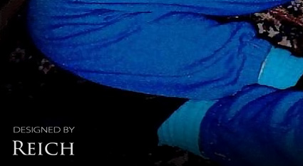
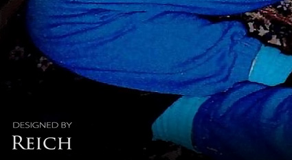

Polly Hannah Klaas
Jan 3rd 1981 - Oct 1st 1993


The Jewishness of Polly Hannah Klaas
In modern Rabbinic Judaism, the traditional method of determining Jewishness relies on tracing one's maternal line. According to halakha, the recognition of someone as fully Jewish requires them to have been born to a Jewish mother (Mishnah Kidushin 3:12; Shulchan Aruch, Even HaEzer 8:5). Polly Hannah's memory should focus on her wonderful life and incredible Jewish heritage - not on the horrible crime that took her from her loving family and friends.
(REICH) 10/15/24 - Polly Hannah Klaas was born on January 3rd 1981 in Fairfax, Marin County, California to Marc Klaas and Eve Reed Klaas. Polly's mother later divorced Marc Klaas and remarried Alan Nichol. Polly Hannah lived most of her life in Petaluma California with her biological sister, Annie Nichol, and her stepsister, Jess Nichol.
On October 1st 1993, twelve year old Polly Hannah Klaas was abducted from her Petaluma home. A grand search was conducted for two months to bring Polly Hannah home to her family. On November 30th 1993, Richard Allen Davis was arrested for a parole violation. On December 4th 1993, over two months after Polly Klaas was abducted, Davis led investigators to her remains in Cloverdale California - forty-eight miles north of her home in Petaluma.
Recently, Polly Hannah's grandfather, Dr Eugene Reed, was brought to my attention by another researcher, Barnett. He had discovered that Dr Reed's original last name was Rosenberg. As a genealogist located in Europe, I was immediately very interested in the Jewish heritage of Polly Hannah's maternal lineage. I came to learn that Dr Eugene Reed had an incredible life and made amazing contributions to society. What a brilliant man he was. Eugene and Joan's courage in escaping the Holocaust in Europe is one of survival and inspiration.
I have conducted matrilineal genealogical research on the grandparents and ending with the great grandparents of Polly Hannah Klaas. The theme of my research was one of establishing her Jewish heritage. I have published my findings for members of families Rosenberg, Wallach, Grünfeld, and Hostovsky.
What follows are the family lines of Polly Hannah's grandparents, Dr Eugene Rosenberg Reed and Joan Grünfeld Reed. The family lineage of Polly Hannah's grandfather bears the heading Familie Rosenberg. The family lineage of Polly Hannah's grandmother bears the heading Familie Grünfeld.
EVE REED (Polly's Mother - Familie Rosenberg-Reed) - Eve Reed was born in 23 February 1949 in Brooklyn New York to Dr Eugene Reed and Hannerl Joan Josefine Grünfeld Reed. In the 1950 U.S. Census, one year old Eve(n)lyn lived with her parents, Eugene Reed and Hannerl Joan Josefine Grünfeld Rosenberg Reed, in the home of her grandparents, Markus Rosenberg and Taube Toni Wallach Rosenberg.
At 28 years old, Eve Reed married Marc Klaas in San Francisco California in 1977. They had one daughter. Polly Hannah Klaas was born on January 3rd 1981 in Fairfax, Marin County, California to Marc Klaas and Eve Reed Klaas. Eve later divorced Marc Klaas. Eve met Alan Nichol because her daughter Polly Hannah had befriended Nichol's daughter Jess in the local park. Eve later married Polly Hannah's playmate's father, Alan Nichol. At that time, Eve lived in Petaluma California. Eve and Alan Nichol had a biological daughter named Annie Nichol - the half-sister of Polly Hannah Klaas.
DR EUGENE ROSENBERG REED (Polly's Grandfather - Familie Rosenberg-Reed) - Eugene Reed was born Eugene Rosenberg on 12 October 1919, in Vienna Austria, to Markus Rosenberg and Taube (Toni) Wallach Rosenberg. He had a brother named Edward Rosenberg who was born on 30 January 1923 in Vienna Austria.
Eugene's father, Markus Rosenberg, was born on February 22nd 1884 in Woloczysak Russia. Eugene's mother was born Taube Wallach on January 18th 1893, in Podwoloczysk Poland. Markus Rosenberg married Taube Wallach at the Jewish temple Militärseelsorge on January 24th 1918 in Vienna Austria. Markus and Taube (Toni) immigrated to the United States on October 28th 1940. They were naturalized as US citizens on 23 October 1941.


Eugene met Hannerl Josefine Grünfeld in Vienna Austria. Hannerl played piano. Eugene played the violin. The couple became engaged. Hannerl was the daughter of Dr Rudolf Grünfeld and Ida Hostovsky Grünfeld. Hannerl's parents were married on 7 February 1909 in Vienna Austria at the Jewish temple, Stadttempel. Hannerl had a sister named Ruth Harriet Grünfeld. Ruth married Dr Ernest Freed.
When the Nazis occupied Austria, Eugene and his family, along with his fiancée Hannerl, fled for their lives and found refuge with relatives in London. At this point, Hannerl was known as Joan. Eugene attended university in London during the blitz of WWII. He earned a bachelor of science at the University of London in 1941. Eugene married Hannerl Josefine Joan Grünfeld on May 17th 1942 in London England. Eugene was an Electronic Engineer. Joan was a Dressmaker.
Eugene and Joan immigrated to the U.S. on November 29th, 1943. They were naturalized as US citizens on 29 January 1944. They lived in Brooklyn New York at 1523 Union Street with Eugene's parents - Markus and Taube (Toni) Rosenberg. Eugene registered for the draft in the U.S. on December 7th 1943. Eugene served in the U.S. Army during WWII.
In the 1950 US Census, Eugene and Joan Reed lived with Eugene's parents and their one year old daughter, Eve, in the upstairs apartment at 1523 Union Street, Brooklyn New York. Eugene's father Markus Rosenberg was listed as the head of the house. The granddaughters of Eugene and Joan Reed, were Polly Hannah Klaas and Annie Nichol. The Reeds last lived in Pebble Beach California.
(National Academies Press by C. Paul Robinson) - Eugene D. Reed was a pioneering leader in microelectronics and integrated circuits at AT&T's Bell Laboratories and subsequently at AT&T's Sandia National Laboratory in New Mexico, where he led one of the major organizations, Component Development and Engineering, with a staff of nearly 1200 professionals. Dr. Reed died October 29, 2008, in Pebble Beach, California, at the age of 89. Throughout his career, Eugene D. Reed made many such exceptional contributions to US technology and to the security of our nation and the world. His life mirrored those very words of exceptional service to our nation. To read more about this extraordinary man, visit the Eugene Reed Memorial Site.
MARKUS ROSENBERG (Polly's Great Grandfather - Familie Rosenberg) - Markus Rosenberg was born on February 22nd 1884 in Woloczysak Russia. Markus Rosenberg married Taube Wallach at the Jewish temple Militärseelsorge on January 24th 1918 in Vienna Austria. Markus's wife Taube was born on January 18th 1893 in Podwoloczysk Poland. Markus and Taube had two sons named Eugene and Edward Rosenberg. Markus and Taube left Vienna Austria to escape German persecution of the Jews during WWII. They left with their two sons Edward and Eugene, along with Eugene's fiancee and immigrated to England, living in London. Markus and Taube (Toni) immigrated to the United States on October 28th 1940. They were naturalized as US citizens on 23 October 1941.
TAUBE TONI WALLACH ROSENBERG (Polly's Great Grandmother - Familie Wallach-Rosenberg) - Taube Wallach was born on January 18th 1893, in Podwoloczysk Poland. Taube Wallach married Markus Rosenberg at the Jewish temple Militärseelsorge on January 24th 1918 in Vienna Austria. Taube's husband Markus was born in 1884 in Woloczysak Russia. Taube and Markus had two sons named Eugene and Edward Rosenberg. Markus and Taube left Vienna Austria to escape German persecution of the Jews during WWII. They left with their two sons Edward and Eugene, along with Eugene's fiancee and immigrated to England, living in London. Markus and Taube (Toni) immigrated to the United States on October 28th 1940. They were naturalized as US citizens on 23 October 1941.
EDWARD GEORGE ROSENBERG REED (Polly's Great Uncle - Familie Rosenberg) - Edward George Reed was born Eduard George Rosenberg on 30 January 1923, in Vienna Austria, to Markus Rosenberg and Taube (Toni) Wallach Rosenberg. He had a brother named Eugene Rosenberg Reed who was born on 12 October 1919 in Vienna Austria. Edward's father, Markus Rosenberg, was born on February 22nd 1884 in Woloczysak Russia. Eugene's mother was born Taube Wallach on January 18th 1893, in Podwoloczysk Poland. Taube married Markus Rosenberg at the Jewish temple Militärseelsorge on January 24th 1918 in Vienna Austria. When the Nazis occupied Austria, Edward and his family, along with his brother's fiancée Hannerl, fled for their lives and found refuge with relatives in London. Markus and Taube (Toni), along with Edward, immigrated to the United States on October 28th 1940. His parents were naturalized as US citizens on 23 October 1941. Edward George Rosenberg was naturalized as a US citizen on 25th October 1941. Edward George Rosenberg changed his surname to Reed just as his brother had done. The spelling of his first name from Eduard to Edward had been done before the changing of his surname. He registered for the US military as Edward George Rosenberg but the record of his surname was crossed out and replaced with the surname Reed. Edward worked at IMCO CO, 45 West 16th Street, New York, New York. He lived at 1523 Union Street, Brooklyn New York with his parents.

 

HANNERL JOSEFINE JOAN GRÜNFELD (Polly's Grandmother - Familie Grünfeld-Rosenberg) - Hannerl Josefine Grünfeld was born in Vienna Austria on January 4th 1920 to Dr Rudolf Grünfeld and Ida Hostovsky Grünfeld. Hannerl's parents, Dr Rudolf Grünfeld and Ida Hostovsky, were married in Vienna Austria on 7 February at the Jewish temple named, Stadttempel. Hannerl had one sister. Ruth Harriet Grünfeld was born 29 October 1911 in Vienna Austria. Ruth married Dr Ernest Freed. Hannerl was a pianist. She was listed as a dressmaker when she immigrated to the United States. Hannerl, then called Joan, married Eugene Rosenberg in London England on May 17th 1942. Joan and Eugene left Vienna Austria to escape German persecution of the Jews during WWII. They left with Eugene's parents, Markus and Taube along with Eugene's brother Edward and immigrated to England, living in London. Joan and Eugene immigrated from Liverpool England to the United States on November 29th 1943, arriving in Boston Massachusetts on the ship, Empress of Australia. They were naturalized as US citizens on 29 January 1944. They lived in Brooklyn New York at 1523 Union Street with Eugene's parents - Markus and Taube (Toni) Rosenberg. The couple later changed their last name from Rosenberg to Reed. Joan and Eugene Reed had a daughter named Evenlyn, known as Eve. Joan's granddaughters were Polly Hannah Klaas and Annie Nichol. Eugene and Joan retired to their favorite vacation spot, the Monterey Peninsula, decades before their deaths, settling in Pebble Beach, California.
DR RUDOLF GRÜNFELD (Polly's Great Grandfather - Familie Grünfeld) - Rudolf Grünfeld was born in Tesin, Okres Jičín, Hradec Kralove, Czechia to Markus Grünfeld and Josefine Neumann Grünfeld on 8 November 1877. Dr Rudolf Grünfeld married Ida Hostovsky on 7 February 1909 in Vienna Austria at the Jewish temple, Stadttempel. Dr Rudolf Grünfeld and Ida Hostovsky Grünfeld had two daughters. Ruth Harriet Grünfeld was born 29 October 1911 in Vienna Austria. Ruth married Dr Ernest Freed. Hannerl Josefine Grünfeld was born 4 January 1920 in Vienna Austria. Hannerl married Eugene (Rosenberg) Reed.
IDA HOSTOVSKY GRÜNFELD (Polly's Great Grandmother - Familie Hostovsky-Grünfeld) - Ida Hostovsky was born in Nachod, Okres Náchod, Hradec Kralove, Czechia to Moriz Hostovsky and Therese Bayer Hostovsky on 28 February 1883. Ida Hostovsky married Rudolf Grünfeld on 7 February 1909 in Vienna Austria at the Jewish temple, Stadttempel. Ida Hostovsky Grünfeld and Dr Rudolf Grünfeld had two daughters. Ruth Harriet Grünfeld was born 29 October 1911 in Vienna Austria. Ruth married Dr Ernest Freed. Hannerl Josefine Grünfeld was born 4 January 1920 in Vienna Austria. Hannerl married Eugene (Rosenberg) Reed.
RUTH HARRIET GRÜNFELD FREED (Polly's Great Aunt - Familie Grünfeld) - Ruth Harriet Grünfeld was born in Vienna Austria on October 29th 1911 to Dr Rudolf Grünfeld and Ida Hostovsky Grünfeld. Ruth's parents, Dr Rudolf Grünfeld and Ida Hostovsky, were married in Vienna Austria on 7 February at the Jewish temple named, Stadttempel. Ruth had one sister. Hannerl Josefine Grünfeld was born 4 January 1920 in Vienna Austria. Hannerl married Eugene (Rosenberg) Reed. Ruth Harriet Grünfeld married Dr Ernest Freed. Ruth and Ernest were later divorced. Ruth Harriet Grünfeld Freed died on 12 February 1970 in hospital at 225 Hawthorne Road in Winston-Salem North Carolina. Her remains were cremated and buried at Forsyth Memorial Park in Winston-Salem North Carolina. Frank Vogler & Sons Mortuary in Winston-Salem was in charge of her services. Note: Though her tombstone and death certificate states her date of birth as 1912, two separate birth records prove that her actual year of birth was 1911.
According to my research, Polly's mother Eve's parents, Eugene Rosenberg Reed and Hannerl Joan Grünfeld Rosenberg Reed, were both Jewish - proven further by the parents of Eugene and Joan who were also Jewish. Therefore, Polly's mother Eve is Jewish on both her paternal and maternal side.
In modern Rabbinic Judaism, the traditional method of determining Jewishness relies on tracing one's maternal line. According to halakha, the recognition of someone as fully Jewish requires them to have been born to a Jewish mother (Mishnah Kidushin 3:12; Shulchan Aruch, Even HaEzer 8:5). Therefore, according to Jewish law, Polly Hannah was fully Jewish.
It is because of Polly Hannah Klaas that I am even aware of her grandfather which inspired me to conduct my research on her matrilineal Jewish genealogy. Polly Hannah's memory should focus on her wonderful life and incredible Jewish heritage - not on the horrible crime that took her from her loving family and friends.
Copyright 2024 All Rights Reserved
Research, Writing and Photographic Design by The Reich Family
Special thanks to the research of Barnett
Sources:
"California Marriage Index, 1960-1985", database, FamilySearch https://www.familysearch.org/ark:/61903/1:1:V669-L2G, Eve C Reed in entry for Marc Klaas, 1977.
Reich Research / Eugene Reed Memorial Site
National Academies Press, Memorial Tributes: Volume 24
EUGENE D. REED, 1919–2008, Elected in 1971
Written by C. Paul Robinson
Eugene D Reed Obituary - Monterey Herald from 15-17 Nov 2008
JewishGen - The Genealogical Research Division of the Museum of Jewish Heritage
"England and Wales Marriage Registration Index, 1837-2005", FamilySearch https://www.familysearch.org/ark:/61903/1:1:QV85-NS6H, Hannerl J Grünfeld, 1942-1942.
"New York, U.S. District and Circuit Court Naturalization Records, 1824-1991", FamilySearch https://www.familysearch.org/ark:/61903/1:1:68P7-SGKD, Entry for Eugene or Eugen Rosenberg and Joan, 29 Jan 1944.
"New York, U.S. District and Circuit Court Naturalization Records, 1824-1991", FamilySearch https://www.familysearch.org/ark:/61903/1:1:6PMV-WN5F Entry for Markus Rozenburg or Rosenberg, 23 October 1941.
"New York, U.S. District and Circuit Court Naturalization Records, 1824-1991," database with images, FamilySearch https://familysearch.org/ark:/61903/3:1:3QHV-J38F-D6YC, Entry for Taube Toni Rosenberg, 23 October 1941.
"New York, New York City, World War II Draft Registration Cards, 1940-1947", FamilySearch https://www.familysearch.org/ark:/61903/1:1:WW16-VPZM, Entry for Eugene Dennis Reed and Mark Rosenberg, 07 Dec 1943.
"United States Census, 1950", FamilySearch https://www.familysearch.org/ark:/61903/1:1:6X5W-ZMSJ, Entry for Marcus Rosenberg and Toni Rosenberg, 10 April 1950.
"New York, New York Passenger and Crew Lists, 1909, 1925-1957", FamilySearch https://www.familysearch.org/ark:/61903/1:1:24LZ-YMQ, Entry for Eduard Rosenberg, 1940.
"New York, U.S. District and Circuit Court Naturalization Records, 1824-1991", FamilySearch https://www.familysearch.org/ark:/61903/1:1:68L3-19PF, Entry for Edward George or Eduard Rosenberg, 25 Oct 1941.
"New York, New York City, World War II Draft Registration Cards, 1940-1947", FamilySearch https://www.familysearch.org/ark:/61903/1:1:WW16-VG2M, Entry for Edward George Reed and Imco Co.
"New York, U.S. District and Circuit Court Naturalization Records, 1824-1991", FamilySearch https://www.familysearch.org/ark:/61903/1:1:68P7-SGKZ, Entry for Joan Hannerl or Hannerl Josefine or Joan Rosenberg and Eugene, 29 Jan 1944.
"Österreich, Niederösterreich, Wien, Matriken der Israelitischen Kultusgemeinde, 1784-1911", FamilySearch https://www.familysearch.org/ark:/61903/1:1:QGJT-1CMW, Entry for Rudolf Grünfeld and Ida Hostovsky, 7 Feb 1909.
"Österreich, Niederösterreich, Wien, Matriken der Israelitischen Kultusgemeinde, 1784-1911", FamilySearch https://www.familysearch.org/ark:/61903/1:1:DTS9-HK2M, Entry for Ruth Harriet Grünfeld and Rudolf Grünfeld, 29 Oct 1911.
"North Carolina Deaths, 1931-1994", FamilySearch https://www.familysearch.org/ark:/61903/1:1:FP3Z-3VZ, Entry for Ruth Harriet Grünfeld Freed and Rudolph Grünfeld, 1970.